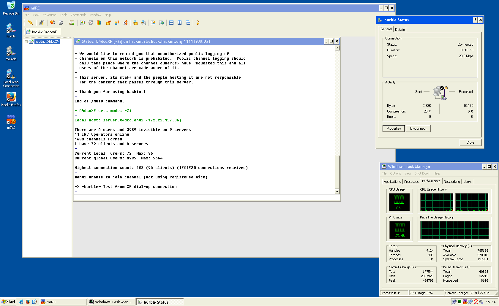
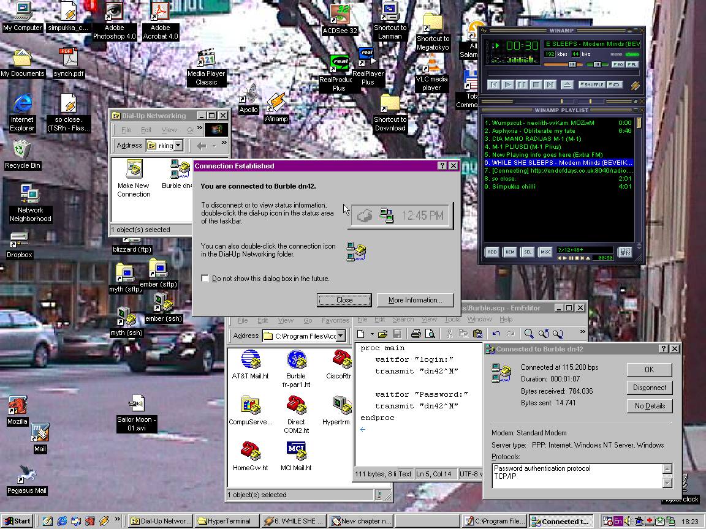
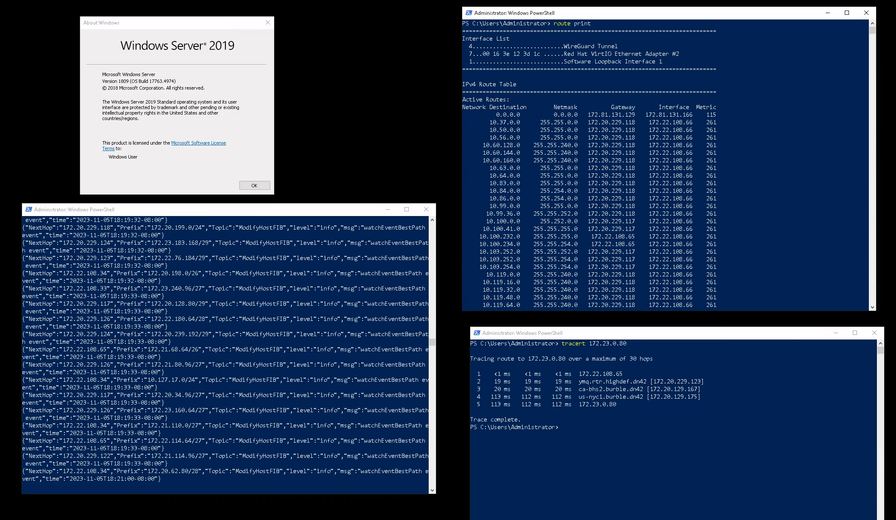

dn42 Show and Tell
Let us know the most creative, best, strangest, complex, wierd or just plain fun setups that you've created with dn42.
Document your mad setups in the categories below, with links to a full write up, photos and screenshots welcome.
Things peered into dn42
- Fun devices peered into dn42,
- Or fun ways to connect them
- The thing must be running BGP and connected into dn42 as a full dynamic peer
Examples:
- Fun with virtualisation
- peer into dn42 from your browser
- Emulate some old bgp capable hardware
- Fun with hardware
- obsolete routers you still have in your garage/loft/basement
- shiny new hardware that you need to 'test' for work
- Fun with networks
- fast networks (100G+), slow networks (UART), strange networks (IP over dns/usb/etc)
- Wired: Token Ring/X.25/ATM/ISDN etc (encapsulation allowed, but bonus points for real physical networks)
- Wireless: dn42 via microwave/laser/satellite
… your stuff goes here
Things attached to dn42
- The thing must be pingable from dn42
- Bonus points if you can access the wiki from it
- Double bonus, the device was able to add or edit its own entry on this page
- Static routing, protocol encapsulation and virtualisation allowed
Examples:
- Fun with virtualisation
- connect using an obscure or obsolete operating system
- Fun with hardware
- Microprocessors (ESP32, Arduino, Pico etc) or FPGAs
- Connect your phone, watch, tv, clock, washing machine etc
… your stuff goes here
- Retro dn42 access service by Burble
-
burble.dn42 provides a dn42 dialup service using real modems over VOIP, together with a modem emulator to ease attaching retro computers or virtual machines into dn42
-
04dco: At a maximum theoretical speed of a whopping 28.8 Kbps, web browsing and IRC chatting were done. My site still loads faster than everyone else's :)

-
grawity: Lacking a physical modem, configured VirtualBox to attach the Windows 98 serial port to a TCP modem emulator at dialup.burble.dn42. Listening to a shoutcast stream of local FM radio station.

-
jlu5: a Windows Server running BGP and receiving dn42 routes! (Full writeup here)

-
mdr: An 8-bit Sinclair ZX Spectrum with Spectranet card fitted connecting to my TNFS server over DN42. Emulator in a web browser also available at https://speccy.mdr.dn42 - sort of like an old-school BBS system with games, message wall, user accounts etc.

Things that use dn42
- Fun stuff that you've done with dn42
Examples:
- Fun with hardware
- home automation or IoT over dn42
- Fun with networking
- Unique or obscure network and routing protocols
… your stuff goes here
- Hardware Random Number Generator by Kioubit
- A raspberry pi was connected to a random number source and random bytes offered via dn42. The raspberry pi is running a custom server to take requests via a simple HTTPS API and interface with the device.
Achievements
Add what you did in/for dn42, yet:
| Who | #peerings | Bandwidth | DNS | Fileserver | Network service | Website |
|---|---|---|---|---|---|---|
| allo | 7 | 1 GBit/s | auth. only | no | no | yes |
| stv0g | 8 | 1 GBit/s | no | no | no | yes |
| fsteinel | 2 | 2 MBit/s | auth. only | no | no | yes |
| haksrpd | 30+ | 30 gbps maximum approx. | auth. only | no | MPLS L3VPN, EVPN, DN42 Service Hosting, etc. | yes |